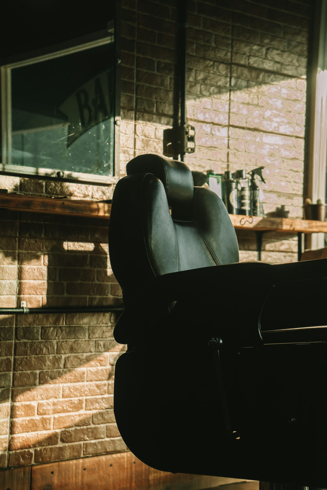

Scissors, straight razor and a hot towel, a few steps from the Maybachufer market. If you have to wait, there’s coffee and a chess board.
Book a chair onlineor call 030 23125 390
Mon–Sat, 10:00–20:00.
Kreuzberg side of the canal, by Kottbusser Damm.
Concept homepage · fictional brand

Tap a time and it’s yours. No account needed.
Today it’s Emre, who’s been cutting hair for 22 years, Lina and Jonas. Walk-ins 14:00–16:00 if a chair’s free.